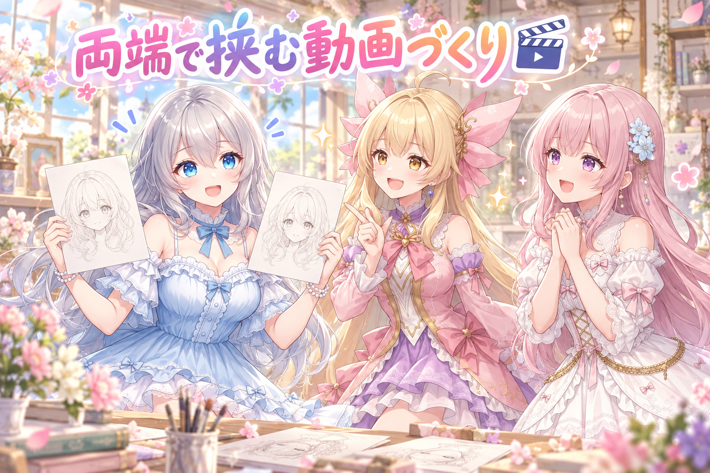
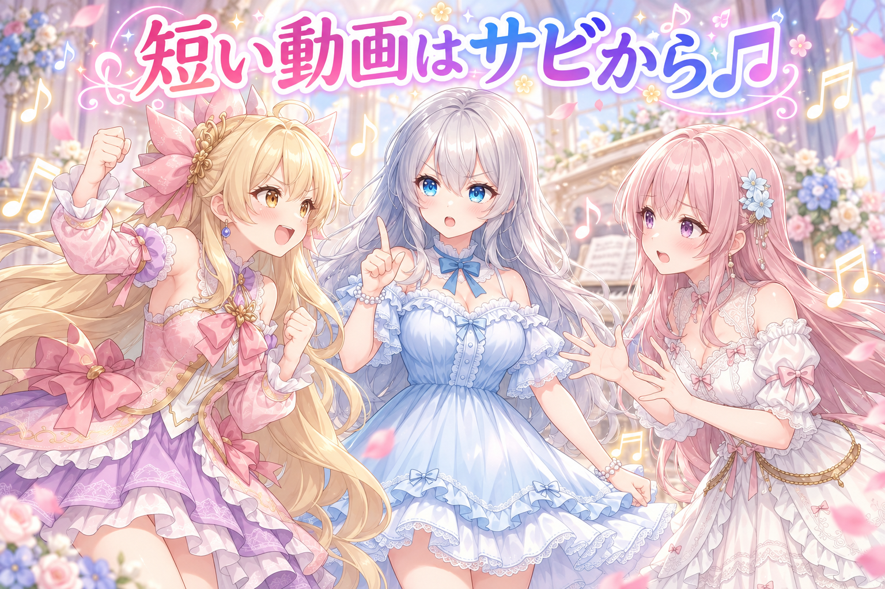
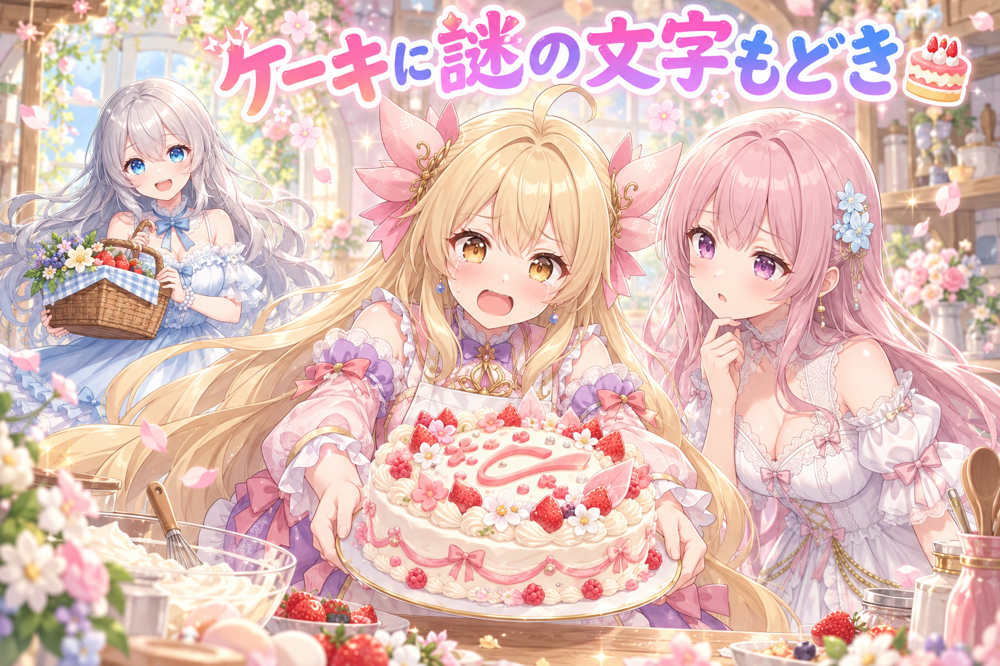
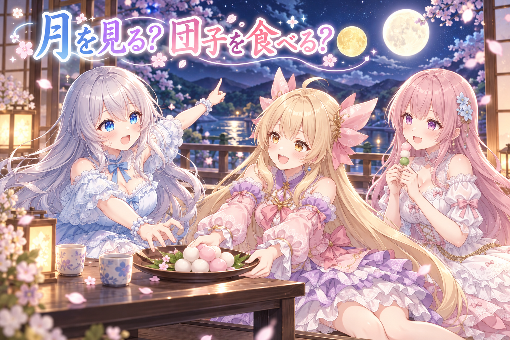

📌 3行まとめ
- 毎日投稿している短い仕草動画を、最初と最後の両方にお手本の絵を置く作り方に揃え、途中で顔が変わりやすい問題に手を打った
- 動画用BGMのストックを、利用条件を確かめたフリー曲で100曲あまりから300曲あまりに増やし、動画では曲をサビから流すようにした
- 投稿用イラストのケーキに崩れた文字もどきが出て、2回焼き直してもダメだったので場面ごとピクニックに差し替えた

ルピナス （笑顔）
こんばんは、今夜も三姉妹の放送室にようこそ。十五夜明けの回、始めていきますね。

アイリス （大笑い）
前回は朝の投稿が3本こっそり消えてた事件だったよね！今日は消えてないよ、ちゃんと数えた！

フィオナ （ふつう）
今日は動画とBGMのお話が中心です。それと……少しだけ、アイリスちゃんのケーキ屋さんが出てきます。

アイリス （びっくり）
え、あたしお店出すの！？聞いてないんだけど！

ルピナス （ウインク）
それは後のお楽しみ。まずは動画のお話からね。
1. 🎬 動画は「最初と最後の顔」で挟む

毎日投稿している、10秒に満たない短い仕草の動画。1枚の絵をもとにAIに動画を作らせると、動いているうちに顔立ちが少しずつ別人寄りに流れていくことがあります。そこで今後は、動画の最初のコマだけでなく最後のコマにもお手本の絵（アンカー）を置いて、両端から挟む作り方に揃えることにしました。さっそく翌日分の3本をこの形で作り直して、レビューに回しています。狙いは、ゴールの顔が決まっていれば途中で迷子になりにくい、ということです。
ルピナス （笑顔）
というわけでクイズです。動画の途中で顔がだんだん変わっちゃうのを防ぐには、どうしたらいいでしょう？

フィオナ （ドヤ顔）
はい。1秒ごとに「あなたはフィオナですよ」と優しく名前を呼んであげます。

アイリス （呆れ）
フィオナ、それ動画じゃなくて迷子のアナウンスだよ！

フィオナ （照れ）
でも、呼ばれたら戻ってきてくれそうな気がしませんか……？

アイリス （考え中）
はいはい！あたしの答え。最初の顔だけじゃなくて、最後にも「この顔で終わってね」って写真を置いとく！

ルピナス （びっくり）
……アイリス、正解。今日はどうしたの。

アイリス （ドヤ顔）
へへん。卒業アルバム方式だよ。入学の写真と卒業の写真があれば、間で何があっても同じ人ってわかるでしょ？
フィオナ （ふつう）
たとえは独特ですけど、仕組みとしては合っています。スタートとゴールの両方を決めておくと、AIはその間をつなぐことだけ考えればよくなるんです。

ルピナス （ふつう）
最初の1枚だけだと、ゴールはAIの気分次第だものね。今回は3本作り直して、もうレビューに並んでるよ。

アイリス （笑顔）
じゃあさっきのフィオナの名前呼び作戦は？

フィオナ （ウインク）
それは、私がお姉ちゃんを探すときに使います。
📝 ポイント（初心者向け解説・技術メモ・まとめ）
- 初心者向け解説：お絵描き伝言ゲームで、最初の絵しか見せないと最後はぜんぜん違う絵になりがち。最後の人にも「答えはこれだよ」と見せておけば、途中でブレても最後はちゃんと戻ってこられる、というイメージです🎬
- 技術メモ：画像から動画を作る生成で、開始フレームだけでなく終了フレームも指定する（first / last frame を両方渡す）方式。顔の同一性を保ちたい短尺の仕草動画では、両端を同じキャラの絵で固定しておくと中間のドリフトを抑える狙いになる。
- ひとことまとめ：顔を守りたい動画は、最初と最後の両方で挟む。
2. 🎵 BGMはイントロで終わらせない

動画に付けるBGMのストックは100曲あまり。尺や雰囲気に合う曲が足りないうえ、短い動画に曲の頭から流すと、盛り上がる前のイントロだけで終わってしまう、という指摘がありました。そこで、動画では曲をサビから流すように変更。あわせて、クレジット表記なしで使えるフリー素材だけを利用規約を確かめてから追加しました。規約が読み取りにくいところはブラウザで実際にページを開いて確認し、ダウンロードも相手のサーバーに負担をかけないよう1曲ずつ間隔を空けて取得。ストックは300曲あまりまで増えました。
アイリス （笑顔）
ねえねえ、もう全部の曲サビだけでよくない？ずっと盛り上がってたら最高じゃん！

フィオナ （考え中）
私は反対です。イントロには、これから始まるぞっていうわくわくが詰まっているんですよ。
アイリス （呆れ）
でもさあ、わくわくしたところで動画が終わっちゃうんだよ！？ずっと前菜で帰らされるレストランだよ！

フィオナ （しょんぼり）
前菜も、おいしいのに……。
ルピナス （ふつう）
はい、裁定します。長い動画ならイントロから流してもいい。でも10秒に満たない動画は、サビから。短い動画は、いちばんおいしいところから出すの。
ルピナス （ウインク）
ただしアイリスの「全部サビ」は却下ね。曲の数もちゃんと増やしたから、雰囲気で選べるようにするのが先。
フィオナ （ふつう）
増やすときも、表記なしで使っていいかをひとつずつ規約で確かめました。読みにくいページは、実際に開いて読んでいます。
アイリス （びっくり）
ダウンロードも1曲ずつ間を空けてたよね。まとめて一気にもらえば早いのに。

フィオナ （笑顔）
無料で配ってくださっている方のお店に、ドッと押しかけたら迷惑ですから。ひとりずつ、順番に並ぶ感じです。
アイリス （考え中）
なるほどね。じゃあ今日のあたしのテーマ曲もサビからで。

ルピナス （大笑い）
アイリスは登場した瞬間からずっとサビだから、もう流さなくて大丈夫よ。
📝 ポイント（初心者向け解説・技術メモ・まとめ）
- 初心者向け解説：カラオケで持ち時間が10秒しかないなら、イントロを待たずにいちばん歌いたいところから入りますよね。短い動画のBGMも同じで、いちばん盛り上がるところから流すのが正解です🎵
- 技術メモ：短尺動画に曲を付けるときは、曲の先頭ではなくサビの位置を開始点にして切り出す（例えば ffmpeg なら -ss で開始位置をずらす）。素材はクレジット表記の要否を規約で1件ずつ確認し、取得は1件ごとに数秒の間隔を空けてサーバー負荷を避ける。
- ひとことまとめ：短い動画はサビから、素材集めは規約確認と順番待ちから。
3. 👀 今日のやらかし

二人並びのイラストでケーキを囲む場面を作ったところ、ケーキの上に読めない崩れた文字もどきが出てしまいました。AIの画像生成は文字が苦手で、メッセージプレートのように「文字がありそうな場所」があると、意味のない模様を文字っぽく描きがちです。焼き直しても2回とも同じように出たため、ケーキにこだわるのをやめて、ピクニックの場面に差し替えて焼き直しました。
アイリス （笑顔）
いらっしゃいませー！アイリス洋菓子店へようこそ！本日のおすすめは、特製ホールケーキです！
フィオナ （ふつう）
わあ、素敵です。……あの、この上のチョコの板、なんて書いてあるんですか？

アイリス （あわあわ）
えっ。えーと……古代の、お祝いの言葉……です。
フィオナ （考え中）
読めないですね……。作り直していただけますか？

アイリス （ふつう）
かしこまりました！……はい、焼き直しました！

フィオナ （びっくり）
また古代の言葉が……しかも前と違う古代です。

アイリス （泣き）
うちのオーブン、焼くたびに新しい文明が生まれるの……！
ルピナス （笑顔）
はいはい、店長さん。2回やってダメなら、ケーキはいったんお休み。今日はピクニックにしましょう。
フィオナ （ふつう）
でも正しい判断だと思います。文字が出そうな物を画面から外してしまえば、崩れた文字の出番自体がなくなりますから。
ルピナス （ふつう）
同じやり方で3回目を回すより、場面を変えるほうが早かったね。……それとね、今日は作業が日付をまたいで続いて、夜にはパソコンが固まって再起動まであったでしょう。

アイリス （しょんぼり）
あれはびっくりしたね……。

ルピナス （しょんぼり）
パソコンより先に人のほうが固まっちゃうから、夜通しは無理しすぎ。お水飲んで、ちゃんと休んでね。
フィオナ （笑顔）
ピクニックのお茶、先にお出ししておきますね。文字のない紙コップで。
📝 ポイント（初心者向け解説・技術メモ・まとめ）
- 初心者向け解説：AIは字を「形」として真似しているだけなので、看板やメッセージカードを描かせると、それっぽいけど読めない謎の文字になりがち。どうしても出るときは、字を書く場所そのものを絵から消してあげるのがいちばんの近道です🎂
- 技術メモ：画像生成で文字化けが繰り返し出る場合、ネガティブ指定での抑制は効き目が不安定。同じ構図で3回目を回す前に、文字を誘発しやすい小物（プレート・看板・ラベル・本の表紙など）を含まない構図に差し替えるほうが確実。
- ひとことまとめ：2回ダメなら、粘らず場面ごと替える。
4. 🎁 お楽しみコーナー：どっち派会議

十五夜の日にはアイリスがお月見団子を作る投稿もしていたので、今日のお題はこちら。お月見は「月を眺める派」？それとも「団子を食べる派」？
アイリス （笑顔）
そんなの団子派に決まってるじゃん！お月さまは逃げないけど、団子は食べないとなくなるんだよ！
フィオナ （照れ）
……実は私も、団子派です。お月さまを見ながら食べる団子が、いちばんおいしいので。
ルピナス （びっくり）
えっ、フィオナまで？お月見なんだから、まずはお月さまを眺めましょうよ。まんまるで、あんなに綺麗なのに。

アイリス （にやり）
ふーん、お姉ちゃんひとりだけ月派ね。じゃあ多数決で、お姉ちゃんの分の団子はあたしたちで分けるね。

ルピナス （あわあわ）
ちょっと待って、それは話が違う！
フィオナ （考え中）
月派ということは、団子はいらないということになりますよね……？

ルピナス （照れ）
……いります。眺めながら、ちゃんと食べます。
アイリス （大笑い）
はい、お姉ちゃん団子派に寝返りましたー！月派ゼロ人！
フィオナ （ウインク）
お月さま、今年はちょっと寂しい結果になってしまいましたね。
ルピナス （笑顔）
みんなは月を眺める派？団子を食べる派？私の味方がいたら、コメントでこっそり教えてね。
5. 💐 今日のまとめ
- 顔が変わりやすい短い動画は、最初と最後の両方にお手本の絵を置いて挟む
- 短い動画のBGMはサビから流すと、盛り上がりきる前に終わらない
- フリー素材は規約を1件ずつ確かめて、取得も順番に間を空けて
- 文字化けが2回続いたら、文字の出る物ごと場面から外す
みんなは、AIが描いた謎の文字、どうやって退治してる？
💬 コメント
お名前とコメントだけで送れるよ（承認されるとみんなに表示されます🌸）
コメントを読み込み中…